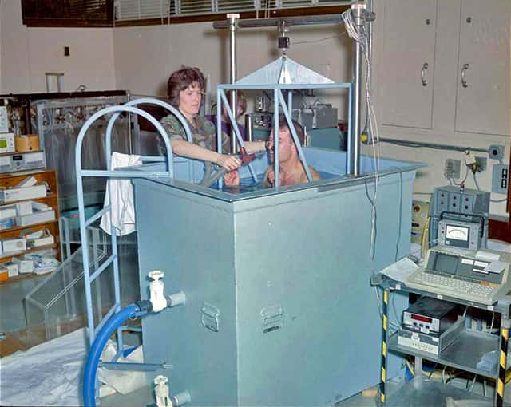

차인준 부사장
한국의 의료기기 회사의 성장기.
인도법인에서부터 지금까지 개인의 성장기.
Before InBody

물탱크에 들어가서 숨을 참아야 했습니다. 완전히 잠수한 채로 3회 반복. 연구실에서만 가능했죠.

캘리퍼로 피부를 집어서 지방 두께를 쟀습니다. 누가 재느냐에 따라 결과가 달랐습니다.

누워서 전극 4개를 붙이고, 50kHz 하나로 측정했습니다. 자세가 바뀌면 값도 바뀌었죠.

30초의 결과
체수분, 단백질, 무기질, 체지방, 골격근량... 부위별로 전부 나옵니다. 30초 서 있었을 뿐인데요.
전 세계 8,000편 이상의 학술 논문에서 기준 장비로 사용됩니다.
Global Network

110개국 수출. 14개 해외법인. 하루 6.4억원어치 의료기기를 세계에 보냅니다.